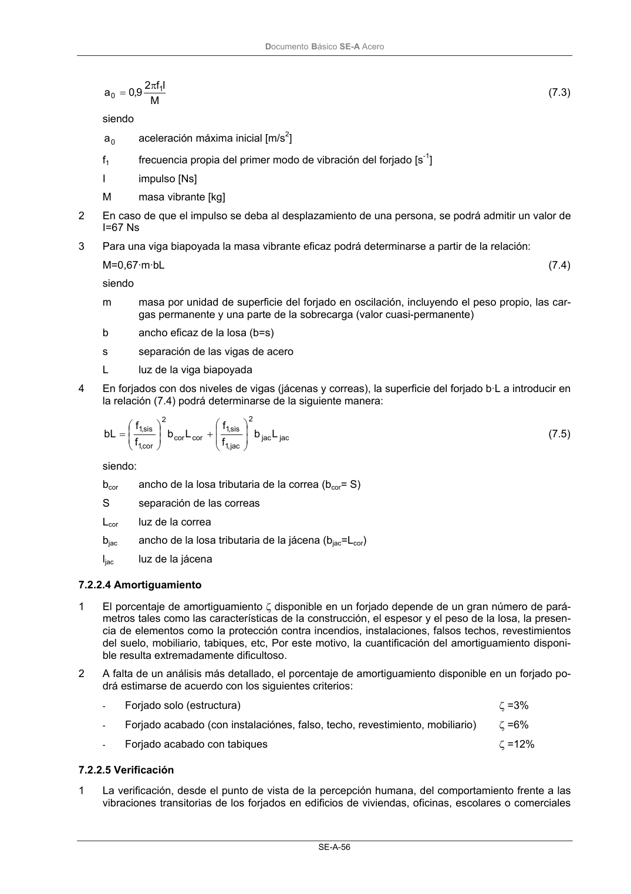

DB-SE-A · 7.2.2.4 Amortiguamiento · versión 2007-10-23 · capa oficial
Formatos: JSON compacto · Markdown · PDF fuente
Ámbito del documento · texto del ámbito · documento y tablas
ID técnico a0098 · PDF pág. 58 · jerarquía no validada por persona · contrastado con el literal de la página 58 (candidato tipográfico); no validado por persona · padre: raíz
7.2.2.4 Amortiguamiento 1 El porcentaje de amortiguamiento ζ disponible en un forjado depende de un gran número de pará- metros tales como las características de la construcción, el espesor y el peso de la losa, la presen- cia de elementos como la protección contra incendios, instalaciones, falsos techos, revestimientos del suelo, mobiliario, tabiques, etc, Por este motivo, la cuantificación del amortiguamiento disponi- ble resulta extremadamente dificultoso. 2 A falta de un análisis más detallado, el porcentaje de amortiguamiento disponible en un forjado po- drá estimarse de acuerdo con los siguientes criterios: - Forjado solo (estructura) ζ =3% - Forjado acabado (con instalaciónes, falso, techo, revestimiento, mobiliario) ζ =6% - Forjado acabado con tabiques ζ =12%

PDF fuente redistribuible: copia fiel enlazada en esta página (SHA256 verificado).